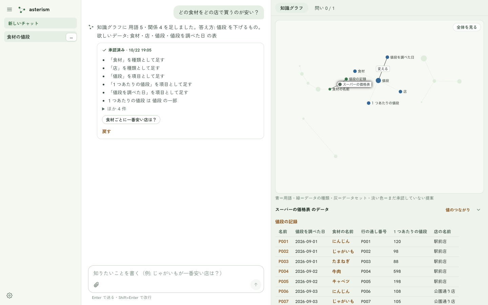
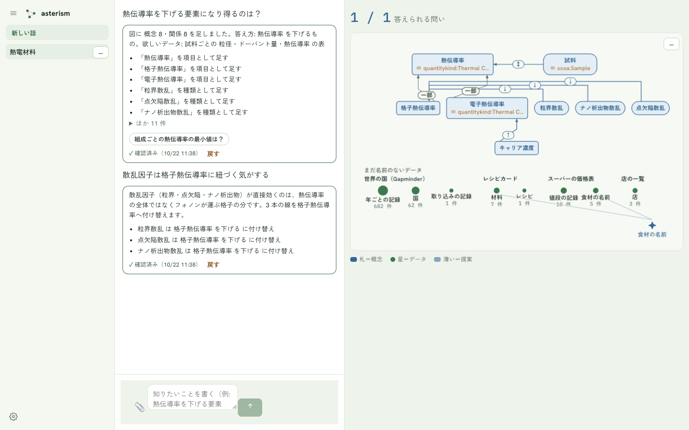
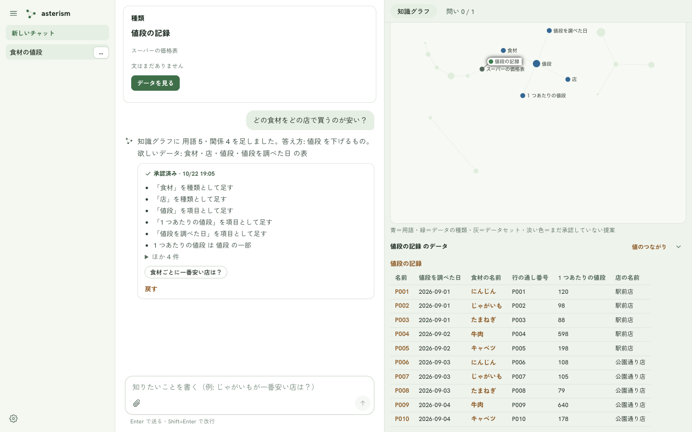
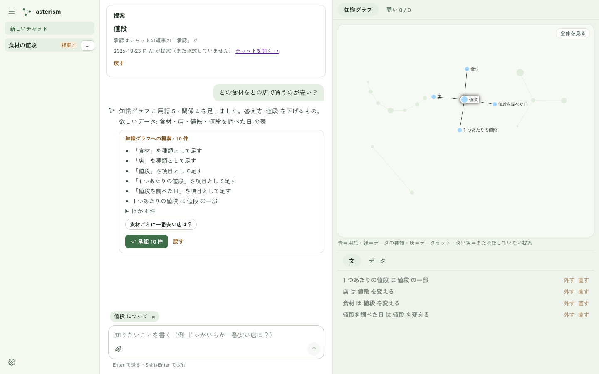
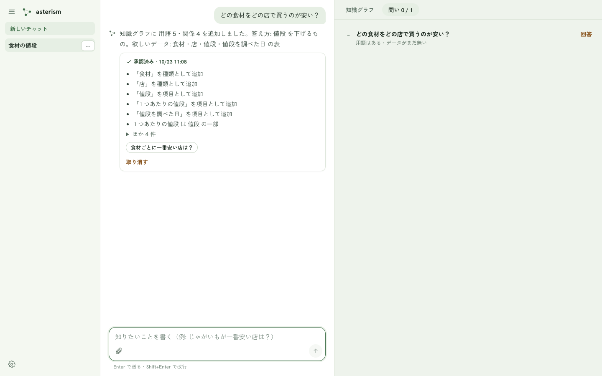
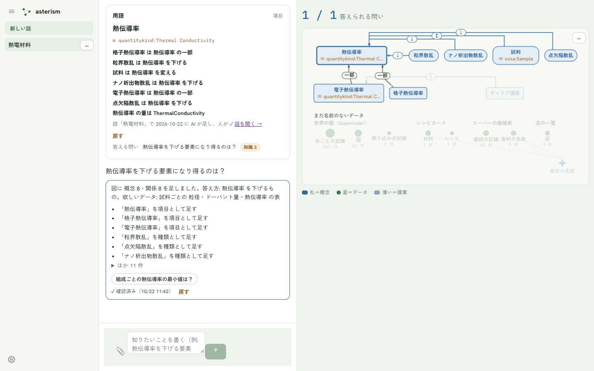
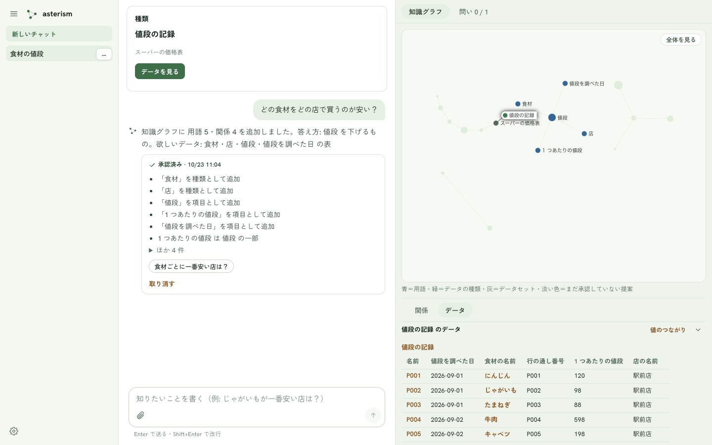
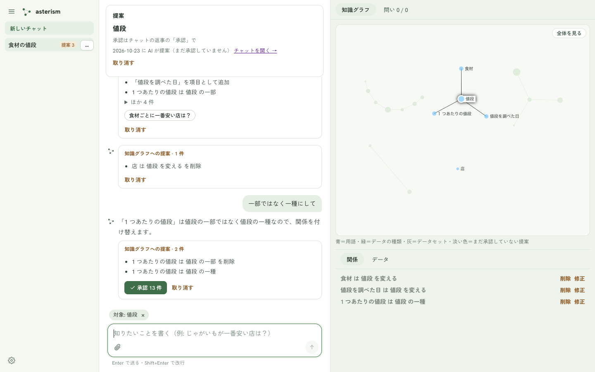
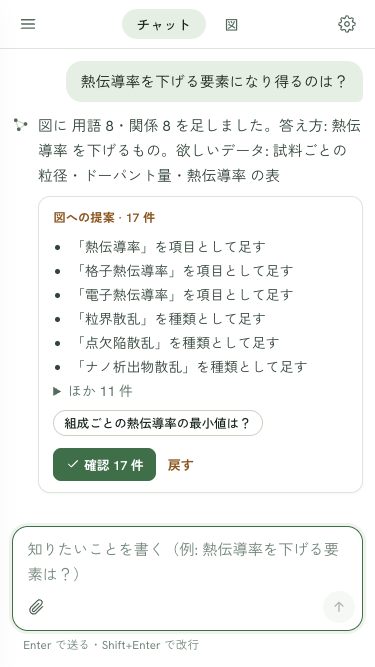
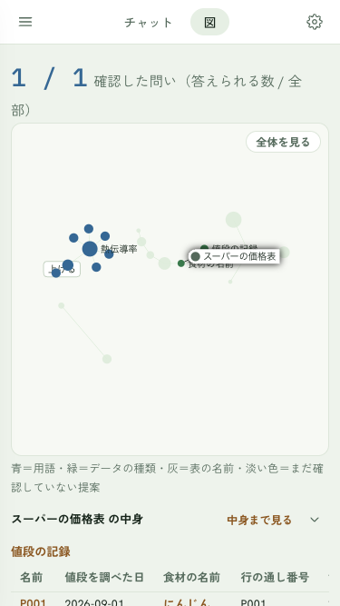

知識グラフ — 全体・文・データ・問い
知識グラフは状態の正本
画面の右の領域が知識グラフです。話した内容（問い・用語・関係）と、公開したデータが知識グラフになります。「今あるデータで、どの問いに答えられるか」をひと目で見るためにあります。右の領域は、一番上に 2 つのタブがあります。
| タブ | 出るもの |
|---|---|
| 知識グラフ（最初に開くほう） | 全体の図（何があるか＝用語とデータの種類）→ 凡例 1 行 → 下のパネル（「関係」「データ」のタブ） |
| 問い N / M | 承認した問いの一覧。N＝今のデータで答えられる数、M＝承認した問いの全部（薄い提案の問いは数えない） |
全体の図
公開済みの用語とデータの種類を、全部まとめて見る図です。丸と、その横の文字で描かれます。
| 図の中のもの | 描きかた |
|---|---|
| 青い丸 | 用語（種類か項目） |
| 緑の丸 | データの種類（公開した表の種類）。大きさは件数の対数 |
| 灰色の丸 | データセット。種類を束ねる |
| 薄い丸 | 提案（AI が追加したが、まだ承認していない） |
| 濃い丸 | 承認済み（承認で確定した） |
| 削除の提案 | 承認済みのものに「削除」を押すと、橙の塗りで示される。承認で確定する |
- ホイール（タッチなら 2 本指）で拡大・縮小し、ドラッグで動かします。
- 点にマウスを載せると、その点の周りだけが濃くなり、名前が出ます。
- 用語どうしをつなぐ線に触れると、関係の名前（一種・一部・下げる・上げる・変える）が出ます。
- 右上の「全体を見る」で、全体が収まる大きさに戻ります。
- 丸を押すと、チャットの先頭に 1 枚が出て、下の「関係」「データ」も変わります。入力欄の上には対象の札が付きます（下の「関係」「データ」「点を押す 1 枚」「対象」）。
- 名前は、重ならないものだけが出ます。拡大すると細かい名前も出てきます。
- 図の下の凡例に「青＝用語・緑＝データの種類・灰＝データセット・薄い＝提案（承認前）」が出ます。
- 同じ内容なら、いつも同じ図が描かれます。
- 何もないときは「まだ何もありません。問いを書くか表を添えると、ここに知識グラフが育ちます」と出ます。






関係（押した点について知識グラフが言っていること）
図の下のパネルは、「関係」「データ」の 2 つのタブです。「関係」には、選んだ点について知識グラフが言っていることが、1 行に 1 つの関係で出ます（例: 「1 つあたりの値段 は 値段 の一部」）。
| 見えるもの | 意味 |
|---|---|
| 濃い行 | 承認済みの関係 |
| 薄い行 | まだ承認していない提案の関係 |
| 行の右の「削除」 | AI を呼ばず、その場で削除される。承認済みの行は「削除の提案」が薄く出て、承認で消える |
| 行の右の「修正」 | 入力欄の上に「対象: 〈その関係〉」の札が付く。入力欄に修正の指示を書く（例: 「一部ではなく一種にして」） |
| 行の右の「承認」 | その 1 行だけ承認する。承認済みのテーマがあるチャットの、薄い行にだけ出る |
- 行を押すと、知識グラフでその 2 つの点とつながりが光ります。
- 最初の提案では、1 行ずつの「承認」は出ません。返事の「承認」でまとめて承認します。
- 用語や提案の点を選ぶと「関係」、データの種類やデータセットを選ぶと「データ」が自動で開きます。手でタブを切り替えると、その選びかたを覚えます。
- 何も選んでいないときの「関係」は、このチャットの未承認の提案の行です。無いときは「知識グラフの点を選ぶと、その点の関係がここに出ます」と出ます。


データ（押した点の実データ）
図の下のパネルの、もう 1 つのタブです。見出しは「〈名前〉 のデータ」。押した点の実際の行が、表で出ます。表の見え方は、チャットの「〜を見せて」と同じです（行の名前を押すと、図で光ります）。
| 押したもの | データに出るもの |
|---|---|
| 緑の丸（データの種類） | その種類の行を 20 件まで。全件数も出る |
| 青の丸（用語） | 用語に結ばれた各データの表。データごとに小見出し。最大 3 表 |
| 灰色の丸（データセット） | そのデータの種類の表。最大 3 表 |
| 薄い緑の丸（📎 で添えた未公開の表） | 公開前の表 |
| 何も押していない | このチャットで添えた表 |
- 表が 3 つを超えるときは「ほか N 表は「値のつながり」で」と出ます。
- 見出し行を押すと折りたためます（次から覚えます）。
- 右上の「値のつながり」で、値の網に移ります（下の節）。
- 添えた表が無く、何も押していないときは「知識グラフの点を押すと、そのデータがここに出ます」と出ます。
- 行が 0 件のときは「まだ行がありません」と出ます。
- 薄い提案の用語は、承認して公開するまで行がありません。「承認して公開すると、ここに行が出ます」と出ます。
問いのタブ
一番上の「問い N / M」を押すと、承認した問いの一覧が出ます。縦にいくらでも並びます。
| 欄 | 内容 |
|---|---|
| 印 | ✓＝今のデータで答えられる・–＝まだ |
| 問いの文 | 承認した問い。並びは話のテーマの順 |
| 下の小さい 1 行 | データの問いは「〈データセット名〉で答えられる」（複数なら「・」でつなぎ、3 つまで＋「ほか n」）か「用語はある・データがまだ無い」。知識の問いは「関係で答えられる（n 本）」 |
| 薄い行 | まだ承認していない提案の問い。「まだ承認していません」と出る |
- 問いの文を押すと、「知識グラフ」のタブに切り替わり、その問いに要る用語と、それに結ばれたデータの種類が光ります。
- 「回答」を押すと、その問いがチャットに送られ、質問として送られます（AI の答える口が設定されていないときは、その旨が返ります）（質問する）。送ったあとは「送りました」になり、押せなくなります。
- 問いが 1 つも無いときは「問いはまだありません。チャットで聞いて「承認」すると増えます」と出ます。


薄いと濃い
| 状態 | どうなる |
|---|---|
| 薄い（提案） | AI が返事のたびに追加する。承認しなくても消えない。「取り消す」で取り消せる |
| 濃い（承認済み） | 返事の「承認」で確定する。来歴が残り、質問やほかの AI からの問い合わせで使われる |
承認済みになったものだけが、質問（質問する）と外の AI への回答に使われます。
点を押す 1 枚
知識グラフの丸を押すと、チャットの先頭に 1 枚が出ます。同時に、下の「関係」「データ」もその点のものに変わります。関係の一覧は 1 枚には出ません。下の「関係」のタブで見ます。
| 欄 | 内容 |
|---|---|
| 名前と種別 | 用語・種類・標準用語・つながり・提案 |
| 標準用語 | 「≡」の行。押すと標準用語の 1 枚 |
| 来歴 | 例: チャット「食材の値段」で 10/22 に AI が追加し、人が承認。「チャットを開く →」でそのチャットへ |
| データを見る | 丸のとき。押すと、チャットに表が差し込まれる |
| 削除 | 承認済みは「削除の提案」になり、承認で確定。薄いものは取り消し |
丸のうち、まだ公開していない表（データ）の丸は薄く出ます。




知識グラフを修正する
修正するときは、図を触らずチャットに書きます。
- 「店を削除して」— 削除の提案になる
- 「関係」のタブの行の「削除」— AI を呼ばずに削除される（承認済みの行は削除の提案になる）
- 「関係」のタブの行の「修正」— 対象をその関係に絞って、修正の指示を書く（下の「対象」）
- 「さっきのを取り消して」— 直前の返事を取り消す（承認済みの返事は、承認で追加した分だけを取り消す）
- AI が未設定のとき: 知識グラフの下の「AI なしで追加」から、名前・種別・関係・答え方を決めて「追加」「決める」を押す
対象（チャットの対象を絞る）
知識グラフの点や「関係」の行を選ぶと、入力欄の上に「対象: 〈名前〉」の札が付きます。これが対象です。
- 対象がある間に書いた文は、その点や関係についての修正として扱われます（雑談にも質問にもなりません）。
- AI はその周りだけを修正します。対象の外の変更が混じったときは除いて、「対象外の変更 N 件を除きました」と知らせます。
- 札の × で外せます。何も無い所を押しても消えます。「新しいチャット」でも消えます。
- 送っても札は残るので、続けて修正できます。
例: 「関係」のタブで「1 つあたりの値段 は 値段 の一部」の「修正」を押し、「一部ではなく一種にして」と書くと、その関係の周りだけの差分が出ます。


空のとき
- データも問いも無いとき: 図に「まだ何もありません。問いを書くか表を添えると、ここに知識グラフが育ちます」と出ます。
- データだけがあるとき: 図に緑の丸が並び、データにはこのチャットで添えた表が出ます。問いを書くと、用語が付きます。
- 問いだけがあるとき: 「答えるデータがまだありません」と出ます。表を クリップで添えると、合う種類を探します。
狭い画面（375px）
「チャット」「知識グラフ」「問い」の 3 つのタブで切り替えます。「知識グラフ」のタブは、上から図 → 凡例 → 「関係」「データ」のタブ（折りたたみ）の順です。緑や青の丸を押すと、1 枚は「チャット」のタブに出ます。文とデータは「知識グラフ」のタブに戻ると見えます。




値のつながり（値の網）
「データ」の見出し行の右上にある「値のつながり」を押すと、同じ場所に、公開したデータ全体を 1 枚の網として見る画面が開きます。図が「何があるか」なのに対し、こちらは値そのものの網です。「星図にもどる」で戻ります。
- 件（1 つ 1 つのデータ）と、件どうしのつながりが、点と点を結ぶ関係になります。
- 地域や年のような、少ない種類の値を何度も使う項目は、その値も点になります。同じ値を使う件が、その点のまわりに集まります。
- 同じ相手にしかつながらない件が 20 件以上あれば、1 つの束にまとめます（たとえば測定点が 3,000 件あっても、束の点 1 つになります）。
- 取り込みの記録のような来歴の関係は、はじめは出しません。
見かた
- 上の一行は、件の数から点と関係がいくつになったかの集計です（例: 件 3,800 → 点 776（値 25・束 2）・線 1,497）。
- 点の色は種類ごとに決まっていて、データが増えてもほとんど変わりません（ほかの種類と色がぶつかったときは、隣の色になります）。色が付くのは 8 種類までで、残りは灰色です。画面の下の凡例で種類を押すと、その種類だけに色が付き（8 種類まで）、ほかは灰色になります。「色をすべてに戻す」で元に戻ります。
値の点は濃い灰色、つながりのハブは青、束は大きめの丸で、中の件数が大きさになります。大きさはつながりの数で決まります。
- 名前が同じ種類は、凡例でデータセット名を添えて見分けます。選んだ点の帯にもデータセット名が出ます。
- 名前は、重ならないものだけが出ます。拡大すると細かい名前も出てきます。点にマウスを載せると、その点につながる関係と相手がいったん濃くなり、名前も出ます。
- ホイールで拡大・縮小、ドラッグで動かせます。凡例は画面の下にあります。
操作
- 点を押すと選べます。選んだ点につながる関係と相手だけが濃くなり、ほかは薄くなります。何もないところを押すと選びを外します。
- 画面の下の帯に、名前・種類・つながりの数が出ます。
- 「来歴の線も出す」を入れると、取り込みの記録などの点と関係が加わります。
- 「名前で探す」に入力して「探す」ボタンを押すと、一致した点に寄って選びます。
- 点が多すぎるときは「点が多いので一部だけ出しています」と出て、つながりの多い点から残します。